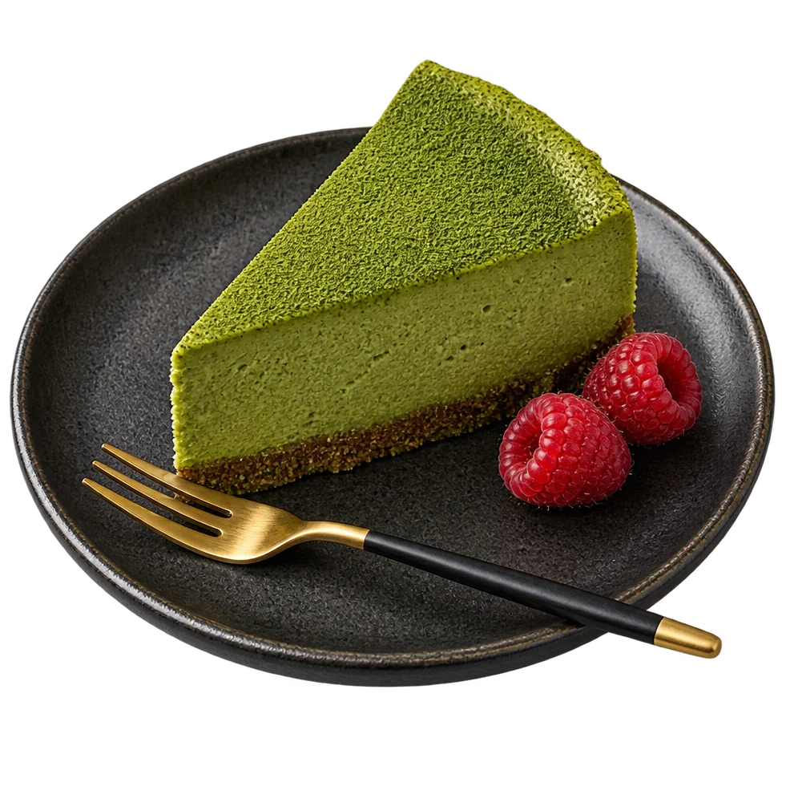

Izakaya, rue de GandHuit tabourets face à la cuisine, du mardi au samedi, midi et soir.
Une carte courte, qui change avec Kaori et les saisons. Le bouillon, lui, ne change jamais.
Bouillon de porc douze heures, chashu, œuf mollet mariné, nouilles fraîches. Le plat de la maison.
Pliés le matin, porc et chou, ou champignons et gingembre. Sauce soja, vinaigre, piment.

Matcha d'Uji, base de biscuit au sésame noir, framboises. Le dessert qu'on refuse d'enlever.
Bento du midi à 14 €, à emporter aussi. Sakés au verre dès 6 €, bières japonaises, thé hojicha.
Réserver le comptoirKaori a ouvert ce comptoir en 2021 avec Léo, qui s'occupe de la salle et des sakés. On mange au comptoir, on la regarde cuisiner, et on lui parle. Le bouillon est mis à chauffer à six heures du matin, il est servi à midi.
Pas de réservation en ligne pour le comptoir, on vous répond au téléphone. Pour la table de six au fond, écrivez-nous.
Un ramen, c'est un bouillon qu'on surveille douze heures, et trois minutes pour le servir.
Kaori
Six sakés commentés par le brasseur, six bouchées de Kaori. Vingt places, 38 €.
RéserverDeux heures avec Kaori, on plie, on cuit, on mange. Huit personnes, 45 €.
RéserverUn ramen différent chaque mardi soir, hors carte, jusqu'à épuisement du bouillon.
La carteHuit places face à Kaori, du mardi au samedi de 19 h à 22 h 30. On réserve par téléphone.
Sur place ou à emporter, 14 €, prêt en dix minutes. Commandez la veille pour les groupes.
Quatorze sakés de petits brasseurs, choisis par Léo, et des bières japonaises. Dégustation le jeudi.
Le meilleur ramen que j'ai mangé en dehors du Japon. Le bouillon, on le sent dans les os.Mathis L. · sur Google
On confirme par téléphone dans l'heure. Le comptoir se réserve par téléphone, la table du fond par le formulaire.